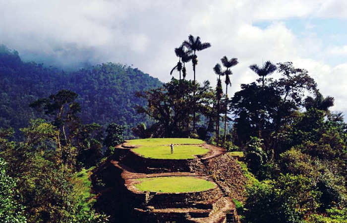
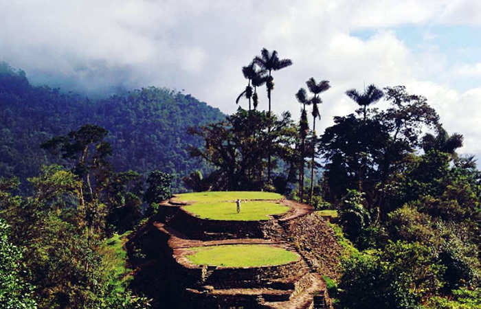

Un destino que lo tiene todo
Santa Marta es puro sabor.
Es una ciudad donde la diversidad está totalmente presente en su paisaje, en su gente y en cada aspecto cultural que la compone; es un destino que acoge a todos sus visitantes y los hace sentir como en casa.
¿Qué la hace única?
Paisajes inolvidables en los que el verde de su vegetación, el azul de sus mares, el amarillo del sol y la arena, y el contraste de las playas con el blanco de la Sierra Nevada hacen de este un destino obligado.
Experiencias únicas
En sus numerosas playas puedes disfrutar de actividades acuáticas, acompañados de diferentes eventos culturales y musicales.
Lugares Turísticos

 



Opiniones
fuimos desde El Rodadero en tour, al llegar al parque comenzamos una caminata por un circuito bien armado con pasarelas de madera y visitamos varias playas, hasta llegar a Cabo San Juan, donde pasamos el día. Playa espectacular con un mar hermoso y un mirador con hamacas para relajarse.
Marcelo DCaminata ecológica en medio de agua cristalina, muchos peces, cascadas y pozos tallados en la roca, una vista espectacular y una experiencia casi que mística. Recomendado. El tour incluye visita a Buritaca (playa, río y mar) después de visitar las cascadas de Quebrada Valencia.
Enrique TEmplazada en el Mar Caribe una simpatica y divertida ciudad. Es el sitio de vacaciones de el Colombiano del interior. Lugar seguro acojedor y con vendedores mas educados.
Ana B